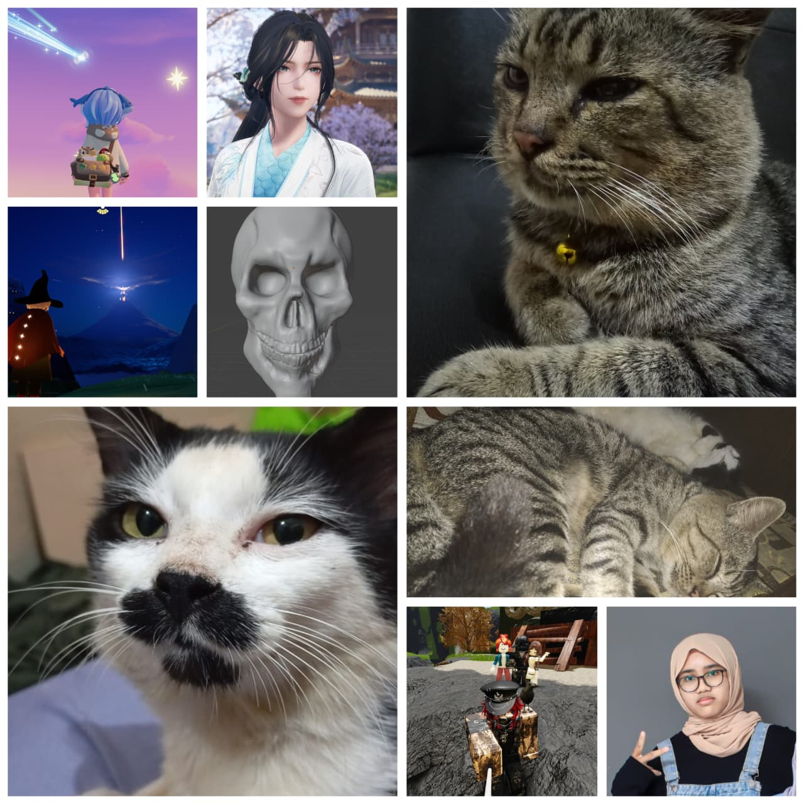

Tentang Saya
Saya, Najmi Sabila Almusfiroh adalah mahasiswa Fakultas Teknik Jurusan Informatika Universitas Siliwangi. Berasal dari kelas E dengan NPM 247006111125, Saya memiliki ketertarikan pada bidang pengembangan web dan terus mengembangkan kemampuan dalam HTML, CSS, serta JavaScript. Melalui website portofolio ini, saya ingin menampilkan proses belajar, keterampilan, serta proyek yang telah saya kerjakan selama perkuliahan.
Portofolio
